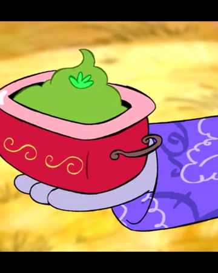

Clabbage Cobbler

Description
Clabbage Cobbler is a smelly cobbler that is made on Cartoon Network's show, Chowder. The dish is a traditional, Upper-Highland Marfield Forgenlegger dish that is prepared with many rituals before it is ready to be eaten.
Ingredients
- Clabbage
- Tears
- Glumburger Cheese
Steps
- Stew up the clabbages
- Load clabbages into traditional Clabbage Smasher
- Add Glumberger Cheese
- Add Tears
- Perform traditional, Upper-Highland Marfield Forgenlegger dance (jumping on one foot while putting your finger on your nose)
- Enjoy!